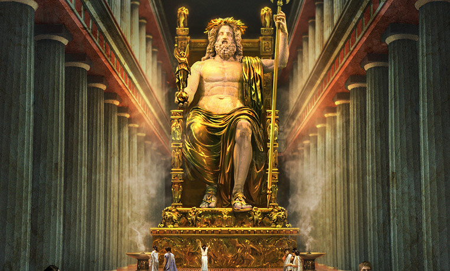

Пирамидите в Гиза
Пирамидите в Гиза са група древноегипетски пирамидални гробници, разположени на платото Гиза в Египет,
на западния бряг на река Нил.Основното предназначение на египетските пирамиди е съхранението на останките
на починали фараони.Разположени са на 9 километра от град Гиза и на 25 километра югозападно от Кайро.
Групата археологически паметници включва трите големи пирамиди – Хеопсовата пирамида, Пирамидата на Хефрен
и Пирамидата на Микерин – както и няколко по-малки пирамиди, разположени в близост до тях. Те са най-старият
и единственият запазен до днес паметник от 7-те чудеса на Античния свят.Пирамидите са част от Некропола в Гиза,
комплексен археологически обект, включващ още Големия сфинкс, останки от древно селище, обслужвало комплекса,
както и множество по-малки религиозни и погребални паметници. През 1979 година целият некропол е обявен от
ЮНЕСКО за част от световното наследство.Пирамидите в Гиза са основните паметници на Некропола в Гиза.
Този археологически обект се намира непосредствено на югозапад от очертанията на град Гиза и на 15 km
югозападно от центъра на днешната египетска столица Кайро. Той заема пустинно плато, издигнато над
плодородната долина на река Нил, разстоянието до която е около 7 km.Пирамидите са заобиколени от десетки други
археологически обекти – гробища и отделни гробници и мастаби, няколко храма и монументалната статуя,
известна като Големия сфинкс. Най-голямата от тях е Хеопсовата пирамида, разположена в северната част на
комплекса. Малко по-малка от нея е Пирамидата на Хефрен, намираща се на около 500 m на югозапад.
Последната от трите големи пирамиди е Пирамидата на Микерин, която е значително по-малка и се намира на
около 500 m югозападно от тази на Хефрен. Освен трите големи пирамиди, комплексът включва и няколко
значително по-малки, често наричани „пирамиди на цариците“ – три пирамиди на изток от Хеопсовата,
една на юг от Хефреновата и три на юг от Микериновата.
Тадж Махал
Тадж Махал, "кралската корона на върха на паласа", е най-известният паметник на архитектурата в Индия и един от най-великите световни
символи на любовта и изяществото. Изграден в периода между 1631 и 1653 г. от император Шах Джахан в чест на неговата покойна съпруга
Мумтаз Махал, този бял мраморен мавзолей стои върху брега на река Ямуна в град Агра.Тадж Махал не е просто архитектурно чудо, но и израз
на безграничната любов и скърбта на императора към неговата жена. Легендата разказва, че Шах Джахан поръчва този мащабен паметник след
смъртта на Мумтаз, като обещание за вечна привързаност. Създаден от майсторски архитекти и изящни художници, Тадж Махал
представлява великолепно съчетание от индийска, персийска и ислямска архитектурна традиция.Структурата се издига в центъра на обширен
градински комплекс, ограден от четири минарета, които допълват перфектно естетиката на мавзолея. Белият мрамор на зданието придава мекота
на контурите му и се променя в различни оттенъци в зависимост от слънчевата светлина, създавайки впечатляващи визуални ефекти.Тадж Махал се
наслаждава на статут на Седемте световни чудес и е включен в списъка на ЮНЕСКО за световното културно наследство.
Посещението на този уникален паметник предлага поглед към историята, културата и изкуството на Индия, оставяйки непреживаемо
впечатление за всеки, който стъпва на световноизвестната бяла плоча пред входа му.
Великата китайска стена
Великата китайска стена, няколко хилядолетия старо инженерно чудо, издигащо се върху планински хърбети и пресичащо
необятни природни пространства, е не само архитектурно великолепие, но и свидетелство за внушителната история и култура на
Китай. Стената не просто разграничава територии, но и обединява векове от китайска цивилизация и традиции.
Идеята за изграждането на Великата китайска стена възниква през 7-ми век пр.н.е. с цел да защити китайската империя от нашествия и
нападения на север. Но този грандиозен проект се развива и променя през различни периоди на историята на Китай. Най-известната и запазена
днес част от стената е тази, изградена от Мин династията (1368-1644 г.) и съсредоточена около Пекин.
Великата китайска стена се изпълва с архитектурни детайли като крепости, кули, стълби, казарми и тунели, които служат не само за военни,
но и за комуникационни и наблюдателни цели. Този обширен комплекс преминава през различни типове терени – планини, пустини, реки, което
го прави инженерен подвиг без прецедент в световната история.През вековете Великата китайска стена е претърпяла
множество модификации, но дори след хилядолетия, тя остава едно от най-важните наследства на човечеството и символ на
издръжливост и волята на нацията. Включена в списъка на световното културно наследство на ЮНЕСКО, стената привлича милиони
туристи, които идват да се потопят в обширната история и красота на Китай. Посетителите могат да изследват различни участъци от
стената, вдъхновени от магията на древната архитектура и природната величественост, която я заобикаля.
Колизеумът в Рим
Колизеумът, известен още като Флавиев амфитеатър, е величествен символ на римската инженерна майсторство, култура и спектакъл.
Построен между 70 и 80 г. от императорите Веспасиан и Тит, а завършен през 80 г. от Домициан, този амфитеатър представлява върха на
архитектурата и развлеченията в Древен Рим.С Колизеумът са свързани многобройни истории за гладиаторски битки, лов на диви животни и
публични представления. Строен от бетон и камък, амфитеатърът е имал капацитет да посрещне до 80 000 зрители и е бил използван за различни
събития, включително борби между гладиатори, театрални представления и дори морски битки, след като сцената била покрита с вода.Колизеумът се
отличава със своето изящество и технологична сложност. Архитектурните детайли, такива като колоните, арки и височината на сградата,
придават на амфитеатъра впечатляващ външен вид. Вътре, галериите и сцената отразяват великолепието на римската инженерна иновация.През вековете
Колизеумът е подлаган на различни разрушителни събития, включително земетресения и пожари, но той продължава да остава впечатляваща икона на
античната Римска империя. Днес, Колизеумът привлича милиони туристи от целия свят, които идват, за да се потопят в богатата история на един от
най-великите архитектурни паметници на човечеството.
Родоски колос
Родоският Колос, едно от изчезналите чудеса на древния свят, представлява величествен статуя във формата на
колосален бронзов кип на гръцкият бог на слънцето - Хелиос. Построен през 280 г. пр.н.е. от художника и скулптор Харес от Линдос, Родоският Колос
се възприема като символ на гордостта и богатството на остров Родос в Егейско море.
Статуята, измерваща около 33 метра височина, възниква след победата на Родос над дългогодишния
си враг - държавата Македония. Този триумфален момент е отпразнуван с изграждането на Родоския Колос,
който представлява Хелиос с лавров венец на главата, държащ в ръцете си факел и светилник. Също така,
статуята бе използвана като вход към градския порт.
За съжаление, Родоският Колос преживява сравнително кратък живот, като се събаря през 226 г. пр.н.е. поради
земетресение. След този инцидент, развалините остават на местоположението си в продължение на столетия. Впрочем,
несъмнено влиянието на Родоския Колос превъзхожда неговото временно съществуване, като съдържа елементи от върховната гръцка
скулптура и изкуство.Въпреки че днес няма останки от оригиналната статуя, Родос продължава да привлича туристи и любители на
историята с чаровната си атмосфера и богатото си културно наследство. Въображението си позволява да възкресим величието на
Родоския Колос и да се възхищаваме на великолепието, което той неприметно внесе в древната гръцка история.
Висящите градини на Семирамида
Висящите градини на Семирамида са легендарна архитектурна структура, която прославя древната високо ценена красота и величие на Вавилон, една от най-изтънчените цивилизации в историята. Тези градини, известни още като "Чудесете на света", са възникнали през старозаветните времена и представляват изключителен пример за техническо майсторство и хоризонтална архитектура.
Според легендата, Висящите градини били създадени по желание на вавилонския цар Навуходоносор II през 6-ти век пр.н.е., за да утеши неговата съпруга Амитис. Този архитектурен чудесен проект бил представен като невероятен градински рай, изграден върху плътни стълбове и стени, създавайки илюзията, че градините висят във въздуха.
Технологията, използвана за създаването на Висящите градини, не е напълно ясна, тъй като няма директни археологически доказателства за тяхното съществуване. Някои историци предполагат, че градините са били поддържани от система за подаване на вода, която позволявала на растенията да растат върху различни платформи.
Въпреки това, точната локация и природа на Висящите градини на Семирамида остават загадъчни. Независимо от това, легендата и вълшебството около тях продължават да вълнуват въображението на хората, като ги представят като символ на роскош и изтънченост в древните времена.

Статуята на Зевс Олимпийски
Статуята на Зевс Олимпийски е едно от най-впечатляващите творения на древногръцката скулптура, въздигната в слава на върховния бог на гръцката митология, Зевс. Този изключителен паметник се намира в древния град Олимпия в Гърция и представлява върховен експонат на архаичната гръцка изкуство и инженерия.
Статуята на Зевс е създадена по поръчка на древногръцкия скулптор Фидий през 5-ти век пр.н.е. и била разположена в храма на Зевс в Олимпия, който беше един от Седемте световни чудеса. Скулптурата представлява Зевс, седнал на трон и държащ мълнията в ръка, символ на неговата власт и надмощие. Статуята била изработена от слонова кост и злато, което придавало на творението несравнен блясък и величие.
Висока над 12 метра, статуята на Зевс в Олимпия съчетава майсторска изработка с изразителна символика. Тя била величествен символ на гръцката религия и култура, привличайки поклонници и пътници от целия античен свят. За съжаление, статуята била унищожена през средновековието, като днес е запазена само част от основата и някои от елементите й.
Въпреки че самата статуя на Зевс не съществува повече, нейната легенда и влияние продължават да въздействат на света на изкуството и историята, оставяйки неизгасващ отпечатък от блясъка на древногръцката цивилизация.

Мавзолея в Халикарнас
Халикaрнас, древен град в Кария, Турция, се отличава с един от най-известните и великолепни мавзолеи в историята - Мавзолей Халикарнас. Построен по поръчка на сатрап (губернатор) Артемис II в чест на неговия баща, карийският крал Мавзол, този архитектурен шедьовър представлява върховен пример за стил и изящество в древната скулптура.
Мавзолей Халикарнас бил завършен около 350 г. пр.н.е. и се отличава с впечатляваща комбинация от гръцки, египетски и азиатски влияния в архитектурата си. Строежът бил разположен в центъра на града и беше едновременно мавзолей и храм, служещ за увековечаване на паметта и величието на Мавзол, който беше починал преди завършването на проекта.
Мавзолей Халикарнас се отличава с великолепен фасаден фриз и изящни скулптури, представляващи богове, герои и сцени от карийската митология. Архитектурната композиция включва стъпала, колони, статуи и купол, създавайки величествена структура, която привлича вниманието със своя изключителен детайл и изработка.
Съжалително, през вековете, поради различни природни бедствия и войни, мавзолеят бил разрушен, но множеството архитектурни елементи и скулптури, открити в руините, свидетелстват за величието му. Днес посетителите могат да разгледат реконструкция и реплики на части от Мавзолея в местния археологически музей и да се впечатлят от наследството на този еднократен мавзолей в историята на изкуствата и архитектурата.
Храм на Артемида в Ефес
Храмът на Артемида в Ефес, най-известен като Артемисион, е бил един от седемте чудеса на света и величествен паметник на античната гръцка архитектура. Намира се в древния град Ефес, в днешна Турция, и е бил посветен на Артемида, богинята на лова и девствеността.
Храмът е изграден през 6-ти век пр.н.е. и съчетава древногръцки и азиатски архитектурни стилове. Известен с грандиозните си размери, Артемисион бил огромен храм с колосални колони, високи над 18 метра, като дължината му е била около 137 метра. Фасадата му била изпъстрена с редица от колосални статуи и релефи, които изобразявали митични и божествени сцени.
Спомен от този велик храм, въздигнат в чест на Артемида, остава в сърцето на древния Ефес. Въпреки че храмът е бил разрушен няколко пъти - първо от летописец Герострат и по-късно от готите, величието му е оценено от времето настройка. Все още се запазват някои от останките, като колоните и фрагменти от скулптурната декорация.
Артемисион бил не само религиозен храм, но и център на културния и търговски живот в този регион. Неговата изключителна красота и величие го правят ключов символ на древногръцката цивилизация и продължават да вълнуват ума и въображението на хората и днес.
Александрийския фар
Александрийският фар, поставен върху остров Фарос в района на днешния град Александрия в Египет, е бил една от седемте световни чудеси на древния свят и символ на инженерното и архитектурно майсторство на старогръцката цивилизация.
Изграден през 3 век пр.н.е. по поръчка на Птолемей II, фарът е проектиран от архитекта и инженер Стразип, който съчетава практическа функционалност с изискан дизайн. Основната цел на фароса била да служи като ориентир и светило за мореплавателите в източната част на Средиземноморието, указвайки пътя към града Александрия.
Висок почти 130 метра, Александрийският фар бил построен от голямо количество светъл мрамор и гранит, а на върха му се намирал огромен пламък, който осветявал околните води. Счита се, че светлината от фара е била видима на десетки километри разстояние.
Фаросът предоставял и жилищно пространство за стражите и обслужващите го лица. Неговата архитектура включвала стълбове и статуи, които служили за декорация и подчертавали величието на този инженерен подвиг.
Съжалително, Александрийският фар е бил унищожен през земетресение през 14-ти век и днес само остатъци и фрагменти от него са запазени. Въпреки това, той остава живо наследство и източник на вдъхновение, като символ на връзката между човека и морето, и на известните технологични постижения на античната Гърция.

Чичен Ица
Чичен Ица, също известен като "Градът на книгите", е древен майски град, намиращ се в днешния Мексико. Този археологически обект представлява едно от най-впечатляващите и значими находища от майската цивилизация, която процъфтяла в региона през пре-колумбовата епоха.
Чичен Ица се издига в прекрасен природен пейзаж и включва големи пирамиди, храмове, дворци и обширни площади. Вероятно е основан през 6-ти век пр.н.е., а върхът на своята слава го постига през класическия период (250-900 г. след Христа). Неговата архитектура и високоразвитата система на централни идеи отразяват великолепието на майската култура.
Изключително важен е "Храмът на Кукулкан", пирамида с план на стъпала, издигаща се в централната част на града. Тя е известна с архитектурната си изтънченост и впечатляващия си външен вид. През пролетните и есенните еквинокси, слънчевата светлина създава сянка на плъзгаща се змия по стълбите, символизирайки майския бог Кукулкан.
Чичен Ица е разгадка на много от майските мистерии, като астрономията, математиката и религиозните обреди. Съчетанието от културна важност и красива природа прави Чичен Ица не само ключов археологически обект, но и туристическа дестинация, която привлича посетители от цял свят, търсещи да се потопят в дълбоката история и загадъчната красота на майската цивилизация.
Мачу Пикчу
Мачу Пикчу - загадъчният град във високите Анди, едно от най-значимите археологически находища и символ на инките, въздигащо се на височина от около 2,430 метра над морското равнище, в Перу. Построено през 15-ти век по време на властта на инките, Мачу Пикчу представлява удивителна комбинация от изключителна архитектура, инженерни умения и природна красота.
Градът е разположен в уникален природен пейзаж, съчетаващ зелени планини, туманни джунгли и извиращи реки. Създаден върху плоска терасовидна теренна конфигурация, Мачу Пикчу се отличава с каменни структури, представляващи домове, храмове, дворци и водопроводни системи. Планинската топография служи не само за защита, но и за естетично въздействие, като градът се вписва хармонично в околния пейзаж.
По много аспекти, Мачу Пикчу се счита за световно изключително богатство поради своята историческа и културна стойност. Градът служи като доказателство за величието на инките и техните архитектурни постижения. Множество теории съществуват относно точната цел на Мачу Пикчу - някои я виждат като светилище, докато други предполагат, че тя може да е била императорска резиденция или дори образователен център.
През 20-ти век, Мачу Пикчу привлича вниманието на света и става част от световното културно наследство на ЮНЕСКО. Сега, той е едно от най-посещаваните туристически места в света, където хора се отправят, за да се потопят в мистерията и великолепието на древната инка цивилизация, което продължава да вълнува и вдъхновява.
Статуята на Христос Спасител
Статуята на Христос Спасител, известна още като "Христос от Корковадо", е една от най-иконичните и величествени скулптури в света, намираща се в Рио де Жанейро, Бразилия. Тази монументална статуя, висяща над града, е символ на религиозна вяра, културно богатство и бразилско национално единство.
Със своите високи 30 метра, статуята представлява изобразяване на Исус Христос, който с широко разперени ръце стои на върха на величествения хълм Корковадо. Създадена през 1931 г. от бразилския скулптор Пауло Лукас Коста и френския инженер Хеитор да Силва Коста, тя е изградена от бетон и гранит и предоставя възможност за впечатляващ изглед към целия Рио де Жанейро.
Статуята на Христос Спасител не само е религиозен символ за мнозина, но и туристическа атракция, привличаща хиляди посетители годишно. От върха на Корковадо се открива невероятна панорама към града, залива Гуанабара и останалата част от Рио, като съчетава природата и градската динамика.
Статуята е също така свидетел на различни исторически и културни събития в Бразилия. През годините тя е била подложена на реставрации и подобрения, като запазва своята красота и важност. Статуята на Христос Спасител остава израз на вярата и културното наследство на Бразилия, представяйки себе си като една от великите икона на света.
Град Петра
Петра, древният град в пустинята на Йордания, е едно от най-загадъчните и вълнуващи археологически находища в света. Този невероятен град е изсечен в розовите скали на планинския каньон и е станал символ на богатата история и култура на античната цивилизация на Набатеите.
Петра възниква през 6-ти век пр.н.е. и постепенно става важен търговски и културен център, контролиращ важни търговски пътища в региона. Отличителната черта на Петра са неговите фасади, изсечени дълбоко в розовите скали, които създават великолепни архитектурни форми. Най-известният обект е "Тронната зала" (Al-Khazneh), която се простира с изящество и е украсена с изкусно изработени детайли.
Градът става по-известен през периода на Римската империя, когато става столица на Набатейското царство. С времето, обаче, Петра пада в забвение и остава загадъчен за западния свят до 19-ти век, когато швейцарският пътешественик Йоган Лудвиг Бьуркхардт го открива.
Прогледан и реставриран, Петра днес е обявен за световно наследство от ЮНЕСКО. Посетителите могат да преживеят удивителната красота и атмосфера на този древен град, разходейки се измежду величествените каньони и откривайки тайните на изчезналата цивилизация. Съчетавайки природна красота и археологическо богатство, Петра е място, което оставя незабравимо впечатление на всеки, който стъпи на неговата земя.